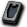
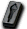

※各怪物的編輯請由標題的鉛筆圖示進行。掉落物品的編輯也可以從掉落物品欄的
帕爾塞斯
庫修隆
莉希涅
斯坎達倫
歐費爾
蓋赫那
戴莫尼翁
諾拉克號｜露米娜神殿碼頭｜露米娜神殿1樓｜謁見之間1｜謁見之間2｜謁見之間3
露米娜神殿2樓｜懺悔房1｜懺悔房2｜懺悔房3｜懺悔房4｜露米娜神殿1樓(首領區)
獎勵1｜獎勵2｜獎勵3
出現怪物
阿努比亞斯
| 阿努比亞斯 | Lv | AC | MC | AAR | SAR | 掉落物品 |
| HP:265,046左右 | 120 | 10 | 47 | 10 | 15 | 革赫納踩踏寶石、革赫納劍、革赫納匕首、革赫納拳套 |
| 善惡值 | 信仰值 | 金錢 | 攻擊屬性 | 防禦屬性 | ||
| 424 | 424 | 1253 | 隨機 | 隨機 | ||
| STR | DEX | INT | WIS | CON | ||
| 200 | 70 | 160 | 60 | 70 |
強烈黑暗 10隻
卡皮歐
| 卡皮歐 | Lv | AC | MC | AAR | SAR | 掉落物品 |
| HP:205,810左右 | 120 | -5 | 75 | -15 | 20 | 革赫納懸掛寶石 |
| 善惡值 | 信仰值 | 金錢 | 攻擊屬性 | 防禦屬性 | ||
| 995 | 995 | 2500 | 隨機 | 隨機 | ||
| STR | DEX | INT | WIS | CON | ||
| 170 | 160 | 160 | 90 | 40 |
燕舞[神聖] 10隻
[爬行貝]
| [爬行貝] | Lv | AC | MC | AAR | SAR | 掉落物品 |
| HP:141,246左右 | 120 | -55 | 44 | 10 | -5 | 革赫納力量寶石、革赫納踩踏寶石、革赫納原型寶石、革赫納項鍊(@5,4,3,2,1)、艾姆阿莫爾寶石、 艾姆阿莫爾方塊、 艾姆阿莫爾方塊、 伊普西龍鎖鏈、 [3次]頭盔4階段升級捲軸、[3次]頭盔5階段升級捲軸、[3次]護膝5階段升級捲軸、[3次]戒指5階段升級捲軸 [3次]頭盔4階段升級捲軸、[3次]頭盔5階段升級捲軸、[3次]護膝5階段升級捲軸、[3次]戒指5階段升級捲軸 |
| 善惡值 | 信仰值 | 金錢 | 攻擊屬性 | 防禦屬性 | ||
| 762 | 762 | 1700 | 隨機 | 隨機 | ||
| STR | DEX | INT | WIS | CON | ||
| 200 | 70 | 80 | 60 | 70 |
備註
[樹精]
| [樹精] | Lv | AC | MC | AAR | SAR | 掉落物品 |
| HP:250,000～260,000 | 120 | 34 | 45 | 10 | 24 | 革赫納原型寶石、革赫納懸掛寶石、革赫納力量寶石、革赫納踩踏寶石、革赫納護膝、革赫納項鍊(@5,3)、 極限之怒、全力風暴踢 極限之怒、全力風暴踢 |
| 善惡值 | 信仰值 | 金錢 | 攻擊屬性 | 防禦屬性 | ||
| 729 | 729 | 1118 | 隨機 | 隨機 | ||
| STR | DEX | INT | WIS | CON | ||
| 200 | 70 | 160 | 60 | 70 |
備註
[巨齒鯊砲]
| [巨齒鯊砲] | Lv | AC | MC | AAR | SAR | 掉落物品 |
| HP:267,434左右 | 120 | 15 | 47 | 10 | 15 | 革赫納懸掛寶石、革赫納力量寶石 |
| 善惡值 | 信仰值 | 金錢 | 攻擊屬性 | 防禦屬性 | ||
| 397 | 397 | ～2167 | 隨機 | 隨機 | ||
| STR | DEX | INT | WIS | CON | ||
| 200 | 70 | 160 | 60 | 70 |
備註 減少迴避、瀕死時？星紫之掌[神聖]
[烏爾修萊茵]
| [烏爾修萊茵] | Lv | AC | MC | AAR | SAR | 掉落物品 |
| HP:2,253,429左右 | 120 | 17 | 10 | 15 | 20 | 革赫納原型寶石、革赫納懸掛寶石、革赫納踩踏寶石 |
| 善惡值 | 信仰值 | 金錢 | 攻擊屬性 | 防禦屬性 | ||
| 6098 | 6098 | ?~5731 | 隨機 | 隨機 | ||
| STR | DEX | INT | WIS | CON | ||
| 200 | 70 | 160 | 60 | 70 |
神聖投擲 10隻
[帕斯托爾]
| [帕斯托爾] | Lv | AC | MC | AAR | SAR | 掉落物品 |
| HP:3,917,691左右 | 120 | 10 | 0 | 15 | 20 | |
| 善惡值 | 信仰值 | 金錢 | 攻擊屬性 | 防禦屬性 | ||
| 8002 | 8002 | ～17307 | 隨機 | 隨機 | ||
| STR | DEX | INT | WIS | CON | ||
| 200 | 70 | 160 | 60 | 70 |
備註
阿瑟拉
| 阿瑟拉 | Lv | AC | MC | AAR | SAR |
| HP:20,680,000 | 120 | 0 | 10 | 70 | 15 |
| 善惡值 | 信仰值 | 金錢 | 攻擊屬性 | 防禦屬性 | |
| 20400 | 20400 | 800000 | 隨機 | 隨機 | |
| STR | DEX | INT | WIS | CON | |
| 200 | 130 | 160 | 200 | 140 |
備註 與Boss區域出現的是同一個體
掉落物品
盧米納寶石 盧米納臉部寶石 盧米納結晶 革赫納緊身衣(@1)、[3次]各種防具4階段升級捲軸 [3次]各種防具5階段升級捲軸、海馬騎士召喚捲軸、阿納西斯、革赫納劍 革赫納斧 革赫納拳套 革赫納匕首、革赫納杖 革赫納魔石 革赫納槍 革赫納豎琴、革赫納雙重奏 革赫納牌組、革赫納艾莫斯 革赫納艾迪亞 革赫納迪多克 革赫納迪菲特、革赫納板甲 革赫納菲納克斯 革赫納貝里翁 革赫納貝里德特、革赫納達布里姆 革赫納夫拉達布里斯 革赫納帕爾丹 革赫納帕爾達、革赫納德爾瑪蒂卡 革赫納德爾瑪林 革赫納精煉、革赫納迪彭德 革赫納羅德納爾 革赫納塔巴德 革赫納賽普爾
掉落備忘
革赫納放置寶石、

貝塔鎖鏈、革赫納艾迪亞、革赫納精煉、黑暗散彈王牌、黑暗洞、黑暗病癒、[3次]鎧甲4階段升級捲軸、[3次]鎧甲5階段升級捲軸、[3次]脛甲5階段升級捲軸、[3次]頭盔5階段升級捲軸、[3次]耳環5階段升級捲軸